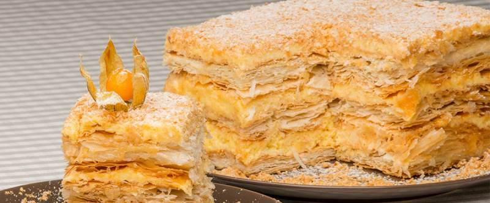

приготовление:
-
Готовим два вида теста. Первое: 250 гр. сливочного масла довести до комнатной температуры, смешать с 1 ст. муки, придать форму параллепипеда, положить на тарелку и поставить в холодильник на 30-40 минут. Второе тесто: 1 яйцо и 1 ст. муки, 1/4 ст. воды и 1/4 ч.л. соли размешать и оставить в мисочке на столе на 30-40 минут.
-
Первое тесто достать из холодильника, раскатать. В середину положить второе тесто, полностью закрыть его первым и раскатать все это до толщины примерно в 1 см. Затем сложить этот лист вчетверо (пополам и еще раз пополам) и поставить в холодильник на 20-30 минут. Затем снова раскатать, сложить вчетверо и поставить в холодильник на 10 минут. Снова достать, раскатать, сложить и еще раз положить в холодильник на 10 минут. Затем достать, разрезать на 4 части и каждую часть раскатать тонко-тонко на бумаге для выпечки, перенести на противень, вилкой наколоть, чтобы тесто не пузырилось и выпекать листы в разогретой до 180 градусов духовке минут 15, до светлокоричневого цвета. Когда листы остынут, подрезать листы ровно, обрезки оставить на крошку-посыпку сверху торта.
-
Для крема нужно: 1 банку вареной сгущенки, 150 гр. обычной сгущенки и 200 гр. сливочного масла оставить на столе, пока все они не станут комнатной температуры. Затем взбить миксером в течении пару минут масло, добавить в него вареную сгущенку, продолжая взбивать влить и обычную сгущенку. Все хорошо перемешать.
-
Сложить торт смазывая коржи кремом, сверху покрошить остатки выпеченных листов, накрыть бумагой, положить сверху груз (доску и до килограмма груза) и оставить на день в холодильнике.